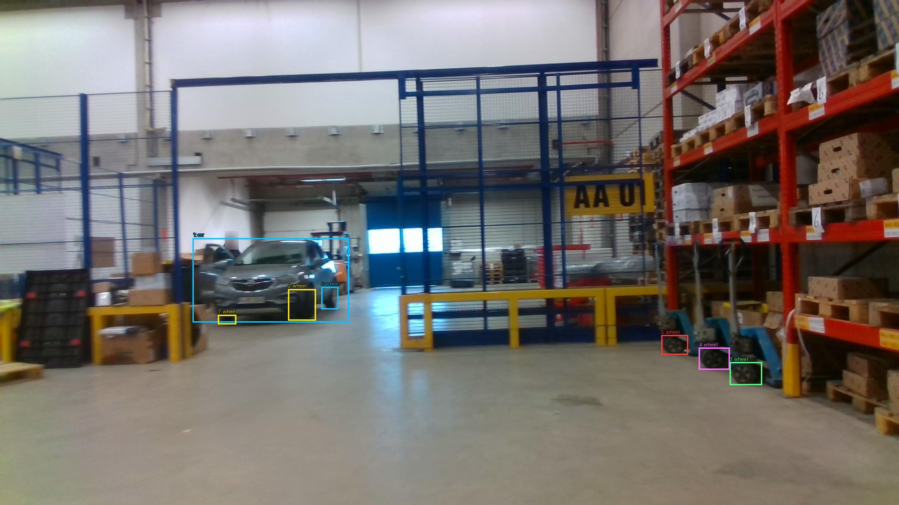
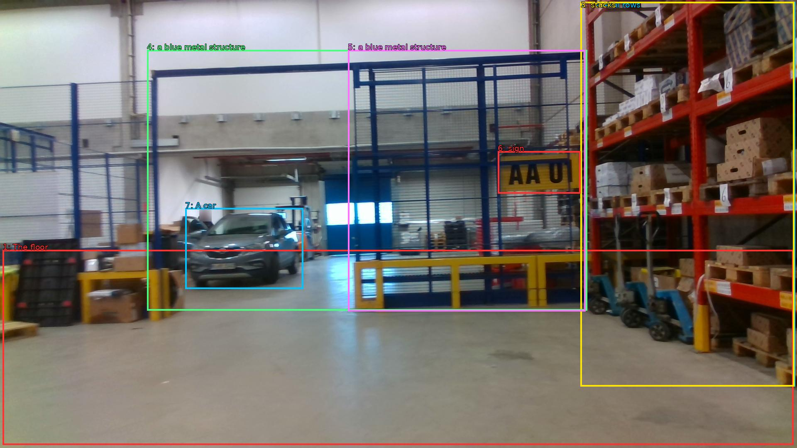

The image shows the interior of a large warehouse with a high ceiling and large windows. The floor is made of concrete and there are several rows of shelves on the right side of the image. On the left side, there are stacks of cardboard boxes and other items. In the center, there is a blue metal structure with a yellow sign that reads "AAU" on it. A car is parked in the background. The warehouse appears to be well-maintained and well-organized.


Original · Caption raw · Grounding raw · Koordinate
Številke so lokalni ID regije. Dolge slikovne oznake so skrajšane; spodaj so celotne fraze. Napovedane regije se lahko prekrivajo ali opisujejo skupine.
| ID | Celotna fraza | bbox xyxy |
|---|---|---|
| 1 | The floor | [6.71999979019165, 602.1000366210938, 1911.3599853515625, 1072.9801025390625] |
| 2 | several rows | [1398.719970703125, 4.860000133514404, 1915.199951171875, 931.5000610351562] |
| 3 | stacks | [1398.719970703125, 4.860000133514404, 1913.2799072265625, 931.5000610351562] |
| 4 | a blue metal structure | [354.239990234375, 120.42000579833984, 1414.0799560546875, 748.9800415039062] |
| 5 | a blue metal structure | [838.0799560546875, 120.42000579833984, 1410.239990234375, 750.06005859375] |
| 6 | sign | [1199.0399169921875, 364.5, 1398.719970703125, 466.02001953125] |
| 7 | A car | [446.3999938964844, 501.6600341796875, 730.5599975585938, 696.0599975585938] |